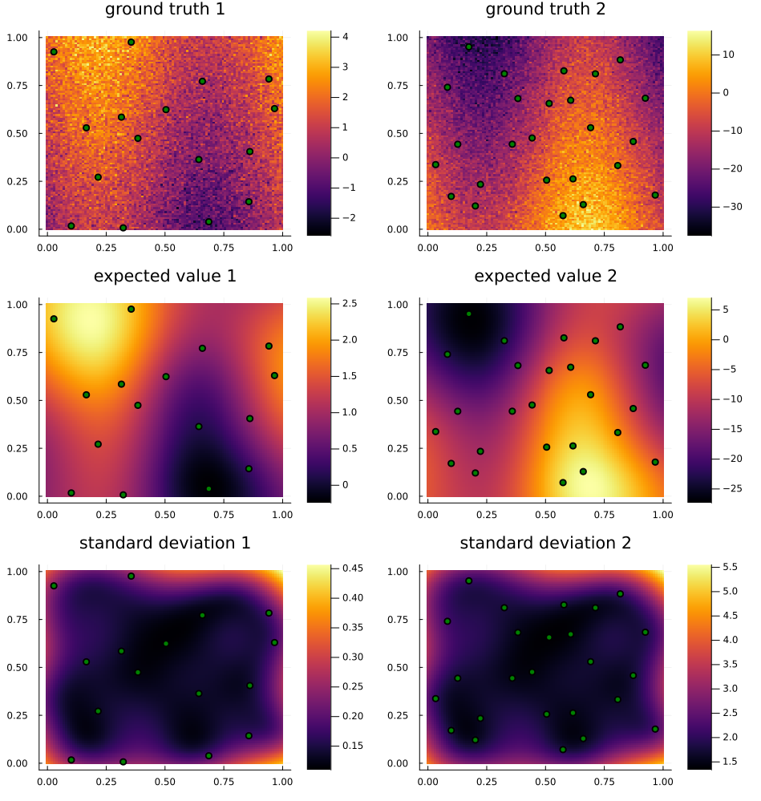

MultiQuantityGPs
Quick Intro
Following is a quick example of the main functionality of this package.
First, the package is loaded and 2D region bounds are chosen.
using MultiQuantityGPs: MQGP, quantityCovMat, quantityCorMat
bounds = (
lower = [0.0, 0.0],
upper = [1.0, 1.0]
)(lower = [0.0, 0.0], upper = [1.0, 1.0])A collection of locations and quantity indices for 2 quantities is randomly generated. The 2D function to model uses a sine with an offset.
# latin hypercube create first quantity sample positions
n = 4
pos1 = [[i,j] .+ rand(2)/n for i in 0:1/n:1-1/n for j in 0:1/n:1-1/n]
# randomly create first quantity values
f = (x1,x2) -> sin(7*x1) + 2*x2
f1 = (x1,x2) -> f(x1,x2) + 1/2*randn()
qnt1_samples = [(; x=(p,1), y=f1(p...)) for p in pos1]
# latin hypercube create second quantity sample positions
n = 5
pos2 = [[i,j] .+ rand(2)/n for i in 0:1/n:1-1/n for j in 0:1/n:1-1/n]
# randomly create second quantity sample values
f2 = (x1,x2) -> -10*f(x1,x2) + 3*randn()
qnt2_samples = [(; x=(p,2), y=f2(p...)) for p in pos2]
# full sample collection
samples = [qnt1_samples; qnt2_samples]41-element Vector{@NamedTuple{x::Tuple{Vector{Float64}, Int64}, y::Float64}}:
(x = ([0.1014248677230073, 0.017136456096628755], 1), y = 0.804886212159093)
(x = ([0.21553521429887124, 0.2714927164646055], 1), y = 1.5913549121599075)
(x = ([0.16540317268270593, 0.5290818384578965], 1), y = 1.8270195554141186)
(x = ([0.027346400536197274, 0.9255011110459324], 1), y = 2.1417046044416677)
(x = ([0.32237746058048444, 0.007137494416495999], 1), y = 1.1724436597322236)
(x = ([0.38465985349141324, 0.47424744756417714], 1), y = 0.9289387563361835)
(x = ([0.31461945384084267, 0.5847372629305434], 1), y = 2.2888364503968823)
(x = ([0.3561854160053266, 0.9761818941899135], 1), y = 2.271232351982277)
(x = ([0.6861698957468274, 0.03888936042988245], 1), y = -0.0036803649801856464)
(x = ([0.6438725960563774, 0.36355786813647284], 1), y = 0.14350113337297782)
⋮
(x = ([0.6167356059607915, 0.26261802628703856], 2), y = 2.7497316121430746)
(x = ([0.6918037583195598, 0.5297483839202053], 2), y = 2.9362396762551644)
(x = ([0.6070019518486146, 0.6729095411824502], 2), y = -4.670290965645845)
(x = ([0.712110040747762, 0.8110070312990102], 2), y = -10.512162896877395)
(x = ([0.9665940519325267, 0.1781230422964107], 2), y = -5.475311058394228)
(x = ([0.8071111032078082, 0.3323606798802031], 2), y = -4.609623826033224)
(x = ([0.8728964084005407, 0.45764229807464374], 2), y = -8.016773233885655)
(x = ([0.9243916392393796, 0.6835075516989007], 2), y = -15.068076795572326)
(x = ([0.817820182662287, 0.8836558664056594], 2), y = -7.141041265607617)The MQGP is created from the samples and bounds. It's hyperparameter values are learned.
mqgp = MQGP(samples; bounds,
noise_value=zeros(2), noise_learn=true,
means_use=true, means_learn=true)MQGP:
θ = (σ = [0.7706784770799523, -9.372081371752119, 5.474077458006132e-5], ℓ = 0.5338898798983465, μ = [1.1873678962533807, -10.37368961391675], σn = [0.3728026477412116, 2.6717928003019282])Values from the MQGP can be viewed, such as the noise hyperparameters:
mqgp.θ.σn2-element Vector{Float64}:
0.3728026477412116
2.6717928003019282Predicted value and uncertainty for a single sample:
mqgp(([0.39, 0.28], 2))(-7.560163609096605, 1.8047505601705698)Predicted value and uncertainty for multiple samples:
mqgp([([0.4, 0.5], 1), ([0.39, 0.28], 2)])([1.2195225057448063, -7.560163609096609], [0.11659742279365277, 1.8047505601705618])The quantity covariance matrix:
quantityCovMat(mqgp)2×2 Matrix{Float64}:
0.732927 -7.22286
-7.22286 94.9744Or the quantity correlation matrix:
quantityCorMat(mqgp)2×2 Matrix{Float64}:
1.0 -0.865716
-0.865716 1.0The following plots show the two quantities, the samples of those quantities, and the predicted values and uncertainties produced by the MQGP across the region.
using Plots
axs = range.(bounds..., (100, 100))
points = collect.(Iterators.product(axs...))
plots = map(1:2) do quantity
pred_map, err_map = mqgp(tuple.(points, quantity))
xp = first.(getfield.(filter(s -> s.x[2] == quantity, samples), :x))
x1 = getindex.(xp, 1)
x2 = getindex.(xp, 2)
true_map = (f1,f2)[quantity].(axs[1],axs[2]')
map_datas = true_map, pred_map, err_map
titles = "ground truth", "expected value", "standard deviation"
map(map_datas, titles) do map_data, title
heatmap(axs..., map_data')
scatter!(x1, x2;
title="$title $quantity",
legend=nothing,
color=:green,
markersize=4)
end
end
plot(
stack(plots; dims=1)...,
layout=grid(3,2),
size=(950,1000)
)
Further Info
See below for further details on each type and method.
MultiQuantityGPs.MultiQuantityGPsMultiQuantityGPs.BoundsMultiQuantityGPs.Kernels.SLFMMOKernelMultiQuantityGPs.LinearModelMultiQuantityGPs.LinearModelMultiQuantityGPs.LocationMultiQuantityGPs.MQGPMultiQuantityGPs.MQGPMultiQuantityGPs.MQGPMultiQuantityGPs.SampleInputMultiQuantityGPs.Kernels.customKernelMultiQuantityGPs.Kernels.fullyConnectedCovMatMultiQuantityGPs.Kernels.fullyConnectedCovNumMultiQuantityGPs.Kernels.initHyperparamsMultiQuantityGPs.Kernels.initHyperparamsMultiQuantityGPs.Kernels.initHyperparamsMultiQuantityGPs.Kernels.manyToOneCovMatMultiQuantityGPs.Kernels.manyToOneCovNumMultiQuantityGPs.Kernels.mtoKernelMultiQuantityGPs.Kernels.multiKernelMultiQuantityGPs.Kernels.multiMeanMultiQuantityGPs.Kernels.singleKernelMultiQuantityGPs.Kernels.slfmKernelMultiQuantityGPs.createLossFuncMultiQuantityGPs.fullCovMultiQuantityGPs.latentCovMatMultiQuantityGPs.meanDerivAndVarMultiQuantityGPs.optimizeLossMultiQuantityGPs.quantityCorMatMultiQuantityGPs.quantityCovMat
MultiQuantityGPs.MultiQuantityGPs — ModuleThis module contains everything to do with what is inferred about values in the environment. In practical terms: means, variances, and correlations. This is all built on Gaussian Processes.
Main public types and functions:
MultiQuantityGPs.Bounds — Typestruct NamedTuple{(:lower, :upper), Tuple{Vector{Float64}, Vector{Float64}}}The bounds of the region. Consists of the lower and upper bounds, each a list of floating-point values.
MultiQuantityGPs.LinearModel — TypeA multivariate linear model of $y$ dependent on $x$ with parameters $a$ and $b$ of the form
\[Y = a + b^T X\]
X and Y are matrices containing the points as columns.
MultiQuantityGPs.LinearModel — MethodReturns a linear model of set of variables Y conditioned on set X. Requires full mean vector and covariance matrix of the joint normal distribution.
MultiQuantityGPs.Location — Typemutable struct Array{Float64, 1} <: DenseVector{Float64}Location of sample
MultiQuantityGPs.MQGP — Typestruct MQGP{T}Belief model struct and function for multiple quantities with 2D inputs.
Designed on top of a Multi-Quantity Gaussian Process, but can still be used with a single quantity.
Its interface: X -> μ, σ (SampleInputs -> means, standard deviations)
MultiQuantityGPs.MQGP — MethodMQGP(
samples;
bounds,
N,
kernel,
means_use,
means_learn,
noise_value,
noise_learn,
use_cond_pdf
) -> MQGP{typeof(MultiQuantityGPs.Kernels.multiKernel)}
Creates and returns a MQGP with hyperparameters trained and conditioned on the samples given. Lower and upper bounds are used to initialize one of the hyperparameters.
A noise standard deviation can optionally be passed in either as a single scalar value for all samples or a vector of values, one for each sample.
Examples
# create a MQGP
beliefModel = MQGP([prior_samples; samples]; bounds)MultiQuantityGPs.MQGP — MethodInputs:
X: a single sample input or an array of multiplefull_cov: (optional) if this is true, returns the full covariance matrix in place of the vector of standard deviations
Outputs:
μ, σ: a pair of expected value(s) and uncertainty(s) for the given point(s)
Examples
X = [([.1, .2], 1),
([.2, .1], 2)]
μ, σ = beliefModel(X) # result: [μ1, μ2], [σ1, σ2]MultiQuantityGPs.SampleInput — Typestruct Tuple{Vector{Float64}, Int64}Sample input, the combination of: (Location, sensor index)
MultiQuantityGPs.createLossFunc — MethodcreateLossFunc(
X,
Y_vals,
Y_errs,
kernel,
use_cond_pdf
) -> MultiQuantityGPs.var"#19#20"
This function creates the loss function for training the GP. The negative log marginal likelihood is used.
MultiQuantityGPs.fullCov — MethodfullCov(
bm::MQGP,
X::AbstractArray{Tuple{Vector{Float64}, Int64}}
) -> Any
Returns the full covariance matrix for the belief model.
MultiQuantityGPs.latentCovMat — MethodlatentCovMat(
bm::MQGP{typeof(MultiQuantityGPs.Kernels.multiKernel)}
) -> Any
Gives the covariance matrix between all latent functions from the hyperparameters.
MultiQuantityGPs.meanDerivAndVar — MethodmeanDerivAndVar(
bm::MQGP,
x::Tuple{Vector{Float64}, Int64}
) -> Tuple{Any, Any}
Returns the normed gradient of the mean of the belief model and its variance.
MultiQuantityGPs.optimizeLoss — MethodoptimizeLoss(lossFunc, θ0; solver, iterations) -> Any
Routine to optimize the lossFunc and return the optimal parameters θ.
Can pass in a different solver. NelderMead is picked as default for better speed with about the same performance as LFBGS.
MultiQuantityGPs.quantityCorMat — MethodquantityCorMat(beliefModel::MQGP)Gives the correlation matrix between all quantities from the hyperparameters.
MultiQuantityGPs.quantityCovMat — MethodquantityCovMat(bm::MQGP) -> Any
Gives the covariance matrix between all quantities from the hyperparameters. The model of the quantities is the latent functions plus their measurement noise.
MultiQuantityGPs.Kernels.SLFMMOKernel — TypeSLFMMOKernel(g::AbstractVector{<:Kernel}, A::AbstractMatrix)Kernel associated with the semiparametric latent factor model.
Definition
For inputs $x, x'$ and output dimensions $p, p''$, the kernel is defined as
\[k\big((x, p), (x', p')\big) = \sum^{Q}_{q=1} A_{p q}g_q(x, x')A_{p' q},\]
where $g_1, \ldots, g_Q$ are $Q$ kernels, one for each latent process, and $A$ is a matrix of weights for the kernels of size $m \times Q$.
MultiQuantityGPs.Kernels.customKernel — MethodcustomKernel(
θ
) -> MultiQuantityGPs.Kernels.CustomMOKernel{_A, <:AbstractMatrix{T}} where {_A, T}
Creates a custom kernel function for the GP similar to the slfmKernel but with matrices of length-scales and amplitudes.
This one does not work and is likely not theoretically valid.
MultiQuantityGPs.Kernels.fullyConnectedCovMat — MethodfullyConnectedCovMat(a) -> Any
Creates an output covariance matrix from an array of parameters by filling a lower triangular matrix.
Inputs:
a: parameter vector, must hold (N+1)*N/2 parameters, where N = number of outputs
MultiQuantityGPs.Kernels.fullyConnectedCovNum — MethodfullyConnectedCovNum(num_outputs) -> Any
Gives the number of hyperparameters for to fill the fullyConnectedCovMat.
MultiQuantityGPs.Kernels.initHyperparams — MethodinitHyperparams(
X,
Y_vals,
bounds,
N,
::typeof(MultiQuantityGPs.Kernels.mtoKernel);
kwargs...
) -> NamedTuple{(:σ, :ℓ), <:Tuple{Any, Any}}
Creates the structure of hyperparameters for a MTGP and gives them initial values. This is for a specialized quantity covariance matrix with separation.
MultiQuantityGPs.Kernels.initHyperparams — MethodinitHyperparams(
X,
Y_vals,
bounds,
N,
::typeof(MultiQuantityGPs.Kernels.multiKernel);
kwargs...
) -> NamedTuple{(:σ, :ℓ), <:Tuple{Any, Any}}
Creates the structure of hyperparameters for a MTGP and gives them initial values.
MultiQuantityGPs.Kernels.initHyperparams — MethodinitHyperparams(
X,
Y_vals,
bounds,
N,
::typeof(MultiQuantityGPs.Kernels.slfmKernel);
kwargs...
) -> NamedTuple{(:σ, :ℓ), <:Tuple{Any, Any}}
Creates the structure of hyperparameters for a SLFM and gives them initial values.
MultiQuantityGPs.Kernels.manyToOneCovMat — MethodmanyToOneCovMat(a) -> Any
Creates an output covariance matrix from an array of parameters by filling the first column and diagonal of a lower triangular matrix.
Inputs:
a: parameter vector, must hold 2N-1 parameters, where N = number of outputs
MultiQuantityGPs.Kernels.manyToOneCovNum — MethodmanyToOneCovNum(num_outputs) -> Any
Gives the number of hyperparameters for to fill the manyToOneCovMat.
MultiQuantityGPs.Kernels.mtoKernel — MethodmtoKernel(θ) -> KernelFunctions.IntrinsicCoregionMOKernel
Creates a kernel function for the GP, which is similar to a multiKernel but instead uses a many-to-one quantity covariance matrix.
MultiQuantityGPs.Kernels.multiKernel — MethodmultiKernel(θ) -> KernelFunctions.IntrinsicCoregionMOKernel
A multi-task GP kernel, a variety of multi-output GP kernel based on the Intrinsic Coregionalization Model with a Squared Exponential base kernel and an output matrix formed from a lower triangular matrix.
This function creates the kernel function used within the GP.
MultiQuantityGPs.Kernels.multiMean — MethodmultiMean(
θ
) -> AbstractGPs.CustomMean{Tf} where Tf<:MultiQuantityGPs.Kernels.var"#13#14"
Creates a quantity-specific constant mean function from the GP hyperparameters.
MultiQuantityGPs.Kernels.singleKernel — MethodsingleKernel(θ) -> Any
A simple squared exponential kernel for the GP with parameters θ.
This function creates the kernel function used within the GP.
MultiQuantityGPs.Kernels.slfmKernel — MethodslfmKernel(
θ
) -> MultiQuantityGPs.Kernels.SLFMMOKernel{_A, <:AbstractMatrix{T}} where {_A, T}
Creates a semi-parametric latent factor model (SLFM) kernel function for the GP.